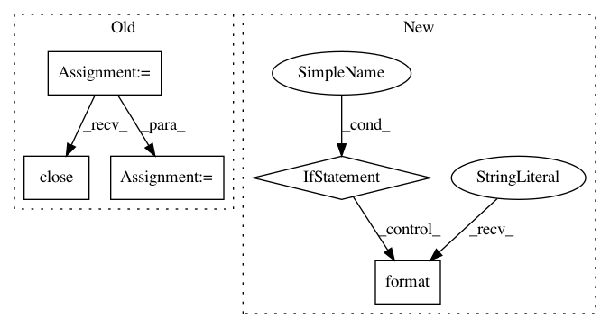

9cdbed54fcb5ccab77166022a0799c163e2942ef,release.py,,update_operator_values_yaml_file,#Any#Any#Any#,106
Before Change
fpath = os.path.realpath(fpath)
if debug:
print("processing [{}]".format(fpath))
f = open(fpath)
yaml_data = f.read()
f.close()
d = yaml_to_dict(yaml_data)
d["image"]["tag"] = seldon_core_version
d["engine"]["image"]["tag"] = seldon_core_version
After Change
err, out = run_command(args, debug)
// pp(out)
// pp(err)
if err == None:
print("updated operator values yaml".format(**locals()))
else:
print("error updating operator values yaml".format(**locals()))
print(err)
def update_versions_txt(seldon_core_version, debug=False):
with open("version.txt", "w") as f:
f.write("{seldon_core_version}\n".format(**locals()))
print("Updated version.txt")
In pattern: SUPERPATTERN
Frequency: 3
Non-data size: 5
Instances
Project Name: SeldonIO/seldon-core
Commit Name: 9cdbed54fcb5ccab77166022a0799c163e2942ef
Time: 2020-04-14
Author: gsunner2000@gmail.com
File Name: release.py
Class Name:
Method Name: update_operator_values_yaml_file
Project Name: pantsbuild/pants
Commit Name: edcd459b9cf96c3e5ffc8d6965df5f2e731b3b84
Time: 2014-10-30
Author: tinystatemachine@gmail.com
File Name: src/python/pants/cache/restful_artifact_cache.py
Class Name: RESTfulArtifactCache
Method Name: use_cached_files
Project Name: uber/petastorm
Commit Name: 6e127316edc8118049ca29ff94e2f4c6d34580dc
Time: 2018-07-31
Author: selitvin@users.noreply.github.com
File Name: petastorm/codecs.py
Class Name: CompressedImageCodec
Method Name: encode